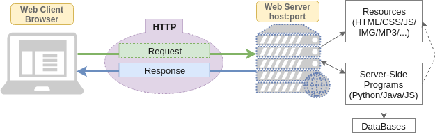
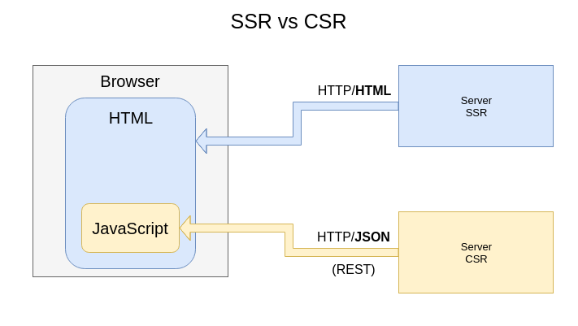

SPA Development Main Concepts
Created for
Iva E. Popova, 2016-2020,

HTTP Client-Server Communication
HTTP Client-Server Communication
Basic Concepts
{kind=link}
- Clients and Servers communicate using HTTP (HyperText Transfer Protocol).
- The client sends a Request message to the server Response message, which can include the requested resource and/or some other status information (like "404 Not Found")
Client-Side vs Server-Side Rendering
Client-Side vs Server-Side Rendering
Overview
{kind=link}
The Client-Side Rendering is based on AJAX
AJAX basics
AJAX basics
What is AJAX?
Asynchronous
JavaScript
And
XML
In reality, these days, the use of JSON prevails over XML, but for backward compatibility we do not say AJAJ
What is AJAX?
- AJAX is just the name for combination of technologies:
- the use of the built-in XMLHttpRequest object to request data from a web server
- the use of JavaScript and HTML DOM (to display or use the data)
With AJAX, Web applications can send and retrieve data from a Web server asynchronously (in the background) without refreshing the existent page
With AJAX we can:
- Update a web page without reloading the page
- Request data from a server - after the page has loaded
- Receive data from a server - after the page has loaded
- Send data to a server - in the background

XMLHttpRequest Overview
XMLHttpRequest at MDNXMLHttpRequest - Simple example
- An empty DIV in which the data will be load after the button click.
- Note, that only the DIV content will be updated!
- test it!
XMLHttpRequest - Simple example
var nodes={
output: document.getElementsByClassName('output')[0],
getDataBtn: document.getElementsByClassName('getDataBtn')[0],
};
var dataURL = 'loremIpsum.txt';
var AJAXcall = function(){
// create a XMLHttpRequest object
var xhr = window.XMLHttpRequest ? new XMLHttpRequest() :
new ActiveXObject("Microsoft.XMLHTTP");
// initializes the request:
xhr.open("GET", dataURL, true);
// EventHandler, that will be fired each time when the xhr state changes
xhr.onreadystatechange = function() {
if (this.readyState == 4 && this.status == 200) {
// finally do something with content:
nodes.output.innerHTML = this.responseText;
};
};
// sends the request:
xhr.send();
};
nodes.getDataBtn.addEventListener('click', function(){
AJAXcall();
});
Of course, in real world, we use libraries and frameworks to make the AJAX cal for us.
Client-Side vs Server-Side libraries and frameworks
Client-Side vs Server-Side Rendering libraries and frameworks
- Ember
- Ember - Client-Side rendering
- Ember-Fastboot - Server-Side rendering
- Vue
- vue.js - Client-Side rendering
- nuxt.js - Server-Side rendering for vue.js
- React - it can render on the client-side and on the server-side
- Angular
- Angular - - Client-Side rendering
- Angular Universal - Server-Side rendering
These slides are based on
customised version of
framework